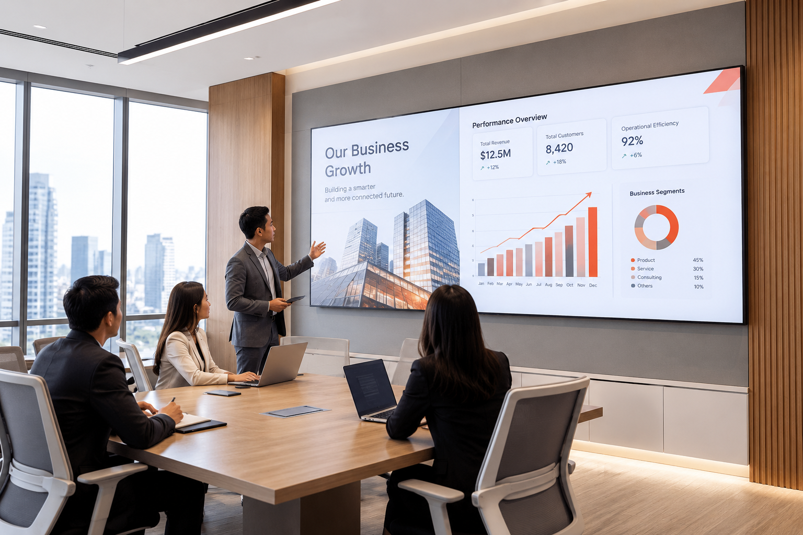
Bisnis & Perkantoran
Videotron Lobi Kantor Perusahaan
Layar utama lobi berukuran 4×2 meter untuk informasi perusahaan, jadwal meeting, dan konten branding harian.
Contoh nyata penerapan videotron indoor di berbagai jenis ruangan. Ingin hasil serupa di lokasi Anda? Tim kami siap membantu dari survei hingga instalasi.

Layar utama lobi berukuran 4×2 meter untuk informasi perusahaan, jadwal meeting, dan konten branding harian.
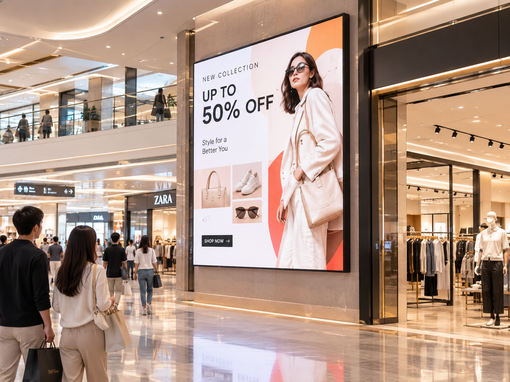
Layar selebar 6 meter di area atrium untuk kampanye promo tenant, tayangan iklan berputar, dan countdown event mall.
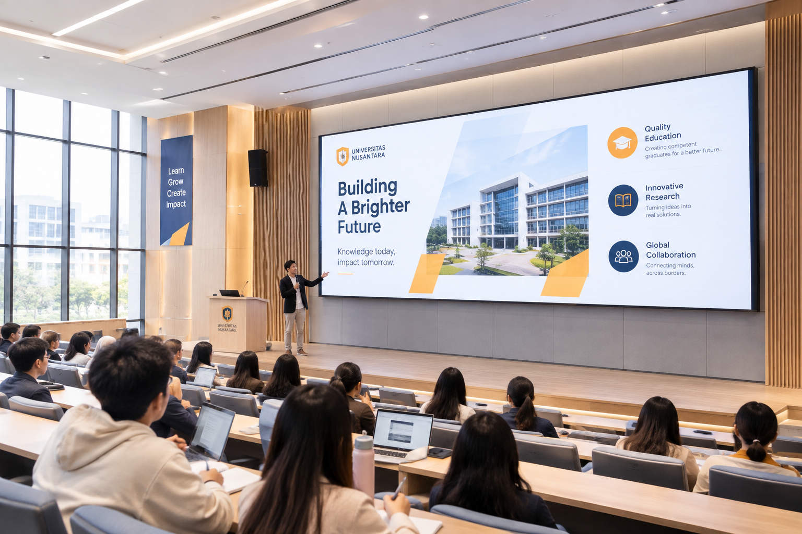
Layar ruang serbaguna sekolah: pembelajaran interaktif, upacara, hingga tayangan informasi akademik dan kegiatan siswa.
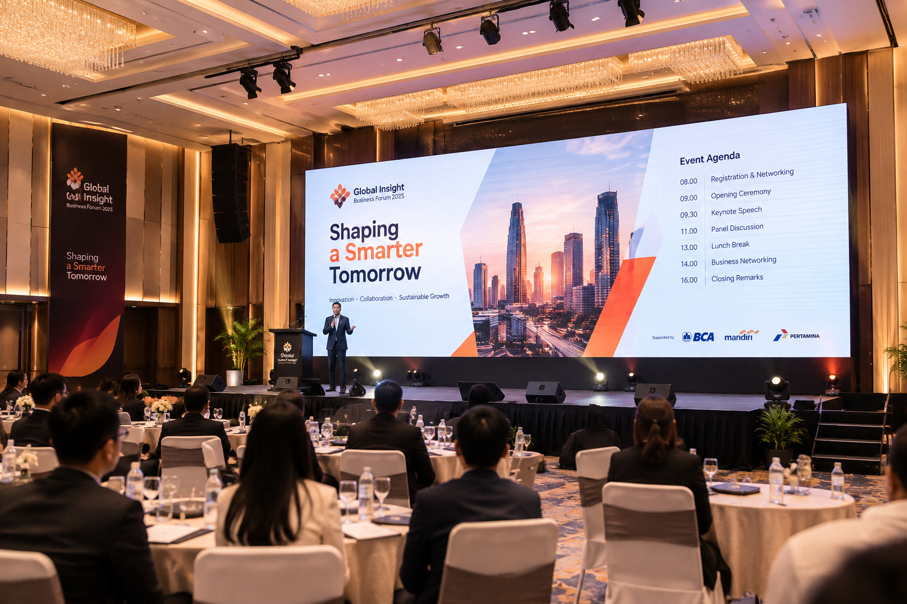
Backdrop panggung modular 8×3 meter dengan refresh rate tinggi agar tampil tetap mulus saat direkam kamera selama acara berlangsung.
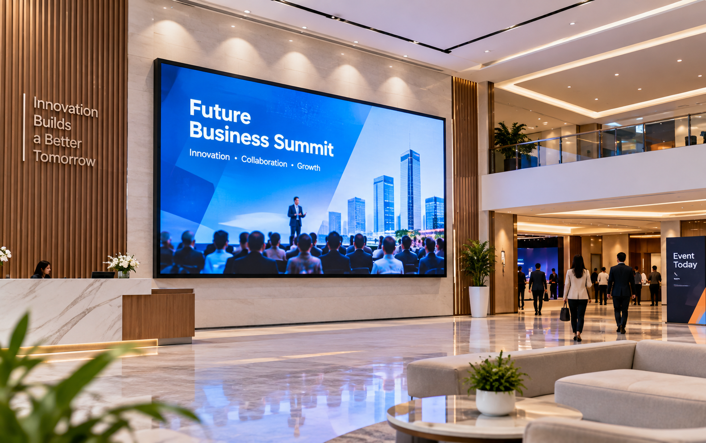
Layar LED indoor berukuran besar untuk ruang serbaguna korporat, mendukung kebutuhan townhall meeting, seminar, dan tayangan multimedia berkualitas tinggi.
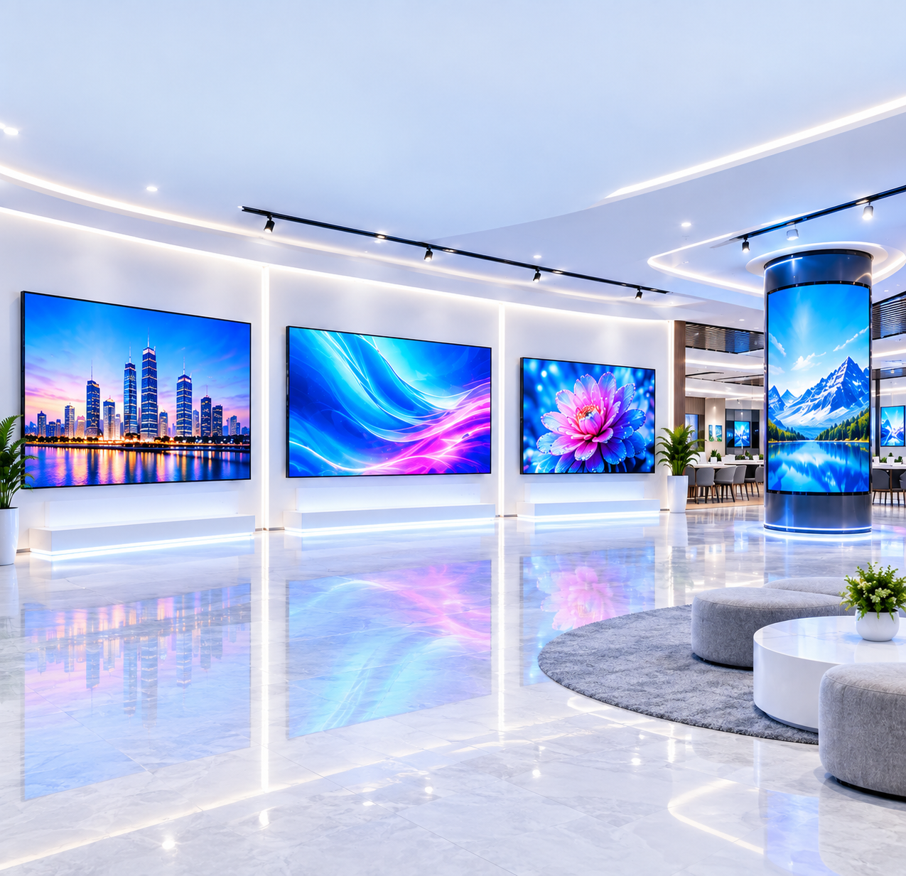
Penyusunan video wall multi-layar modular berdaya tahan tinggi untuk pemantauan data real-time, dashboard analitik, dan pengawasan operasional fasilitas 24/7.
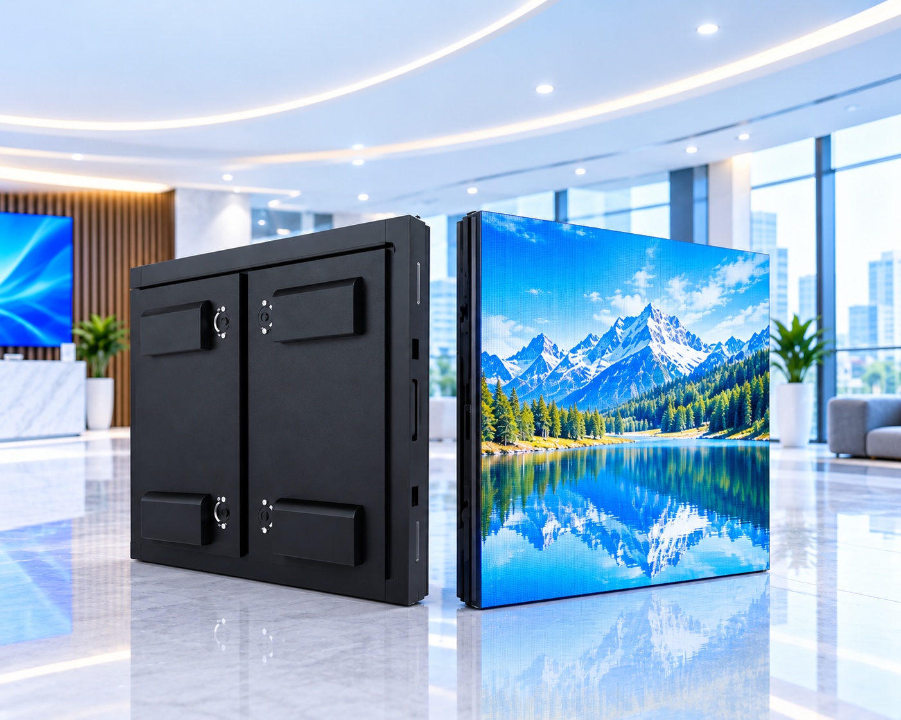
Video wall 3×3 modul untuk menampilkan spesifikasi kendaraan, video 360 derajat, dan harga promo secara detail.
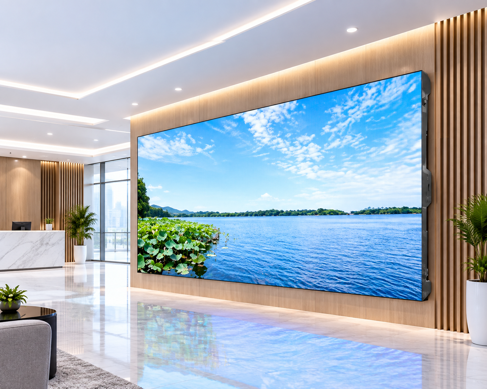
Layar bezel-less premium untuk ruang rapat eksekutif direksi, menghasilkan tampilan teks dan grafik presentasi yang sangat tajam serta nyaman dipandang dari jarak dekat.
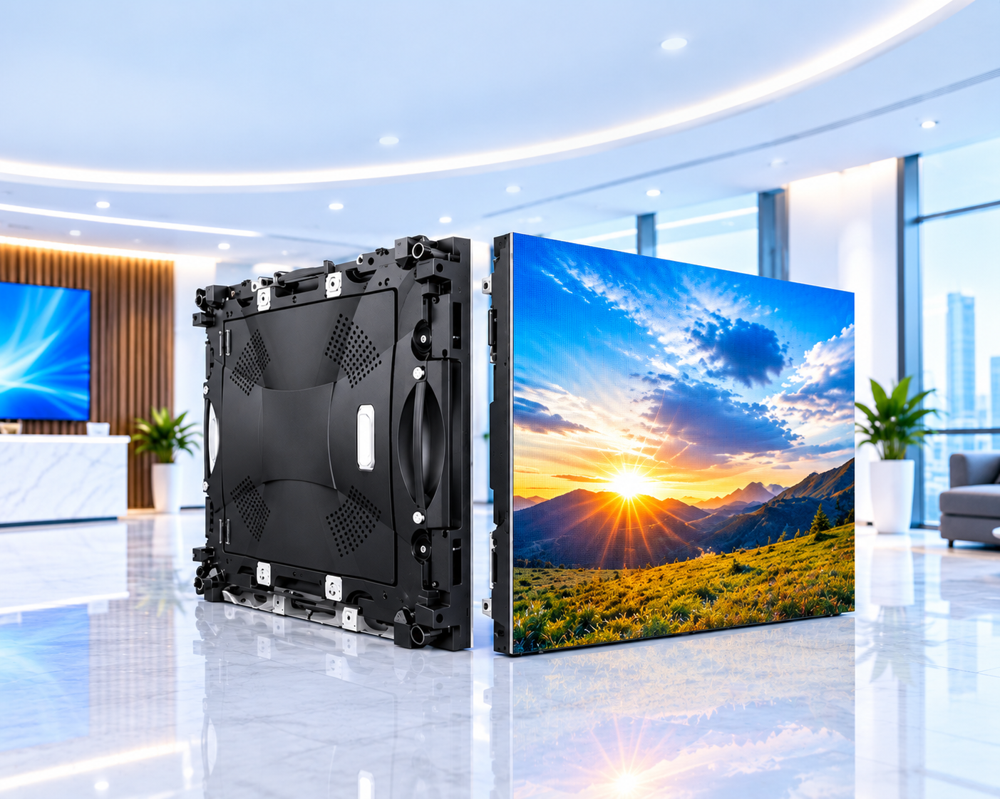
Layar ultra slim di area lobi rektorat untuk jadwal kuliah, pengumuman akademik, dan tayangan profil fakultas.
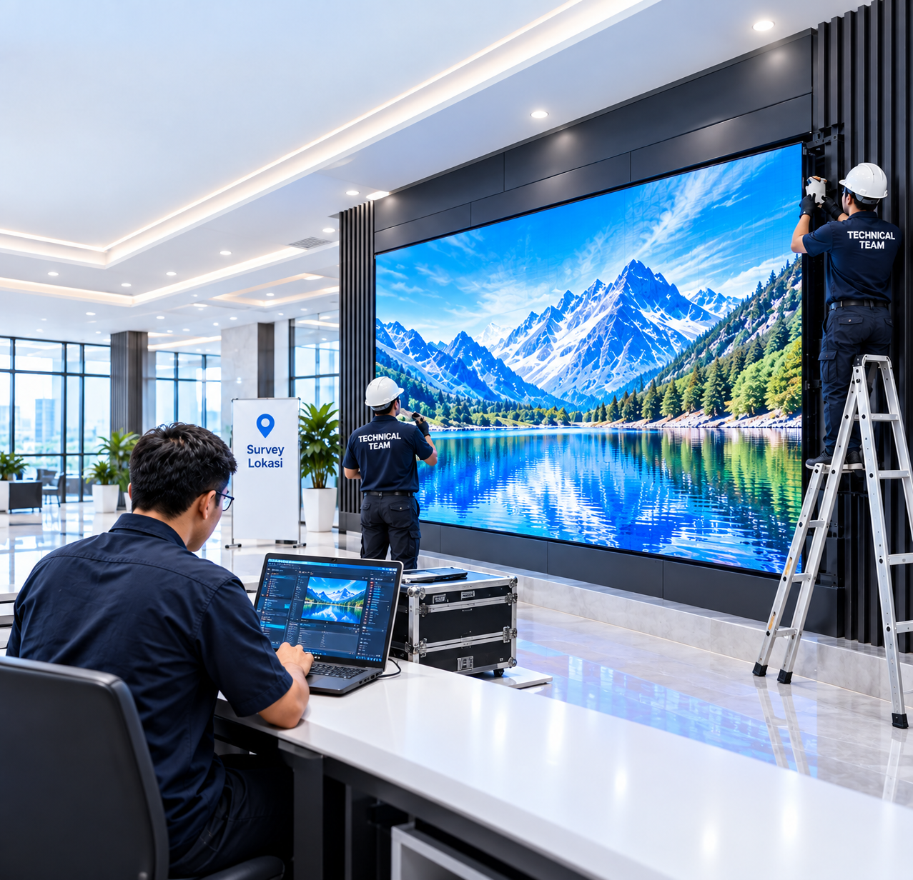
Pemasangan layar meeting room beserta kalibrasi warna dan pelatihan operator internal hingga seluruh tim siap mengoperasikan.
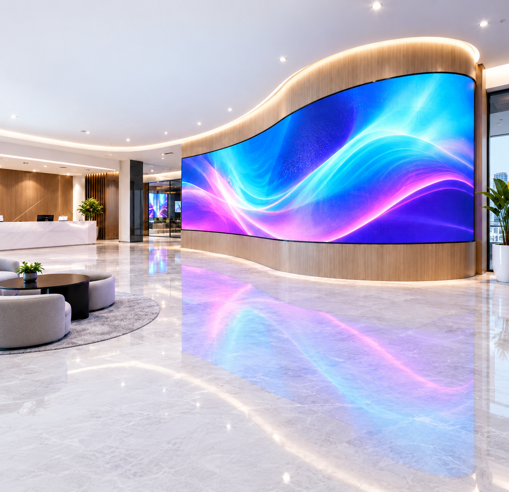
Modul disusun mengikuti dinding melengkung untuk presentation gallery proyek properti, menyatu dengan desain interior showroom.
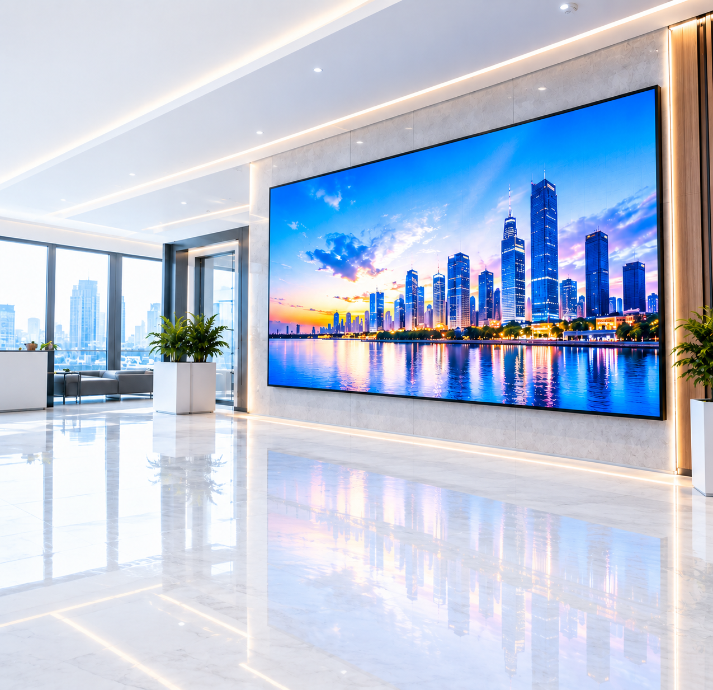
Layar informasi nomor antrian dan jadwal layanan dengan kecerahan stabil, terbaca jelas dari jarak jauh sepanjang jam operasional.